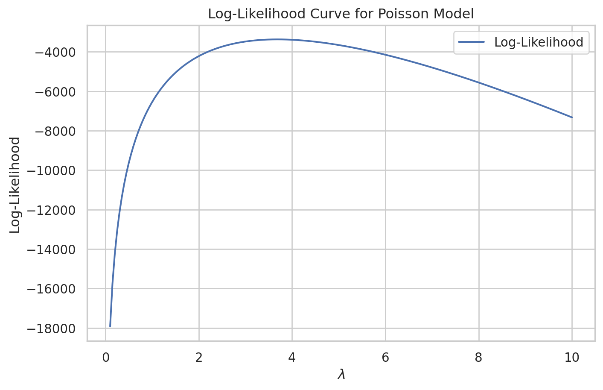
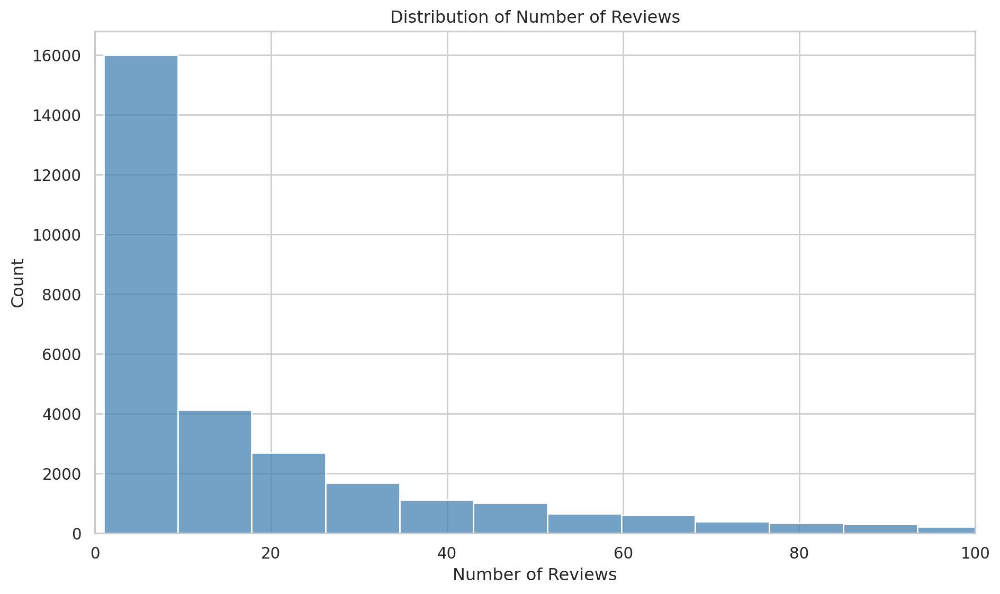
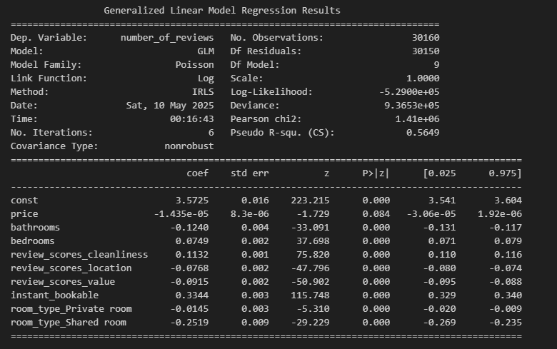

import statsmodels.api as sm
X_fixed = X.astype("float")
glm_poisson = sm.GLM(df["patents"], X_fixed, family=sm.families.Poisson())
glm_results = glm_poisson.fit()
print(glm_results.summary())Poisson Regression Examples
Blueprinty Case Study
Introduction
Blueprinty is a small firm that makes software for developing blueprints specifically for submitting patent applications to the US patent office. Their marketing team would like to make the claim that patent applicants using Blueprinty’s software are more successful in getting their patent applications approved. Ideal data to study such an effect might include the success rate of patent applications before using Blueprinty’s software and after using it. Unfortunately, such data is not available.
However, Blueprinty has collected data on 1,500 mature (non-startup) engineering firms. The data include each firm’s number of patents awarded over the last 5 years, regional location, age since incorporation, and whether or not the firm uses Blueprinty’s software. The marketing team would like to use this data to make the claim that firms using Blueprinty’s software are more successful in getting their patent applications approved.
Data
import pandas as pd
import matplotlib.pyplot as plt
import seaborn as sns
df = pd.read_csv("blueprinty.csv")
sns.set(style="whitegrid")
plt.figure(figsize=(10, 6))
sns.histplot(data=df, x="patents", hue="iscustomer", bins=30, multiple="dodge", palette="Set2")
plt.title("Distribution of Patents by Customer Status")
plt.xlabel("Number of Patents")
plt.ylabel("Count")
plt.legend(title="Is Customer", labels=["Non-Customer", "Customer"])
plt.show()
means = df.groupby("iscustomer")["patents"].mean()
print("Mean number of patents:")
print(" Non-Customers:", round(means[0], 2))
print(" Customers:", round(means[1], 2)) Mean number of patents: Non-Customers: 3.47 Customers: 4.13
Mean number of patents: Non-Customers: 3.47 Customers: 4.13
We observe that Blueprinty customers tend to have more patents on average than non-customers. The distribution of patent counts is right-skewed for both groups, but customers are more concentrated in the higher patent range (e.g., 5 or more patents).
Summary Statistics
- Mean patents (Customers): 4.13
- Mean patents (Non-Customers): 3.47
This suggests a potential positive association between using Blueprinty’s software and patenting success. However, we cannot infer causality from this descriptive comparison alone.
It is possible that firms more active in patenting are also more likely to adopt Blueprinty’s software. Therefore, it is important to control for potential confounding variables such as firm age and regional location in the regression analysis that follows.
region_table = df.groupby("iscustomer")["region"].value_counts(normalize=True).unstack().round(3)
region_table | region | Midwest | Northeast | Northwest | South | Southwest |
|---|---|---|---|---|---|
| iscustomer | |||||
| 0 | 0.184 | 0.268 | 0.155 | 0.153 | 0.240 |
| 1 | 0.077 | 0.682 | 0.060 | 0.073 | 0.108 |
age_table = df.groupby("iscustomer")["age"].mean().round(2)
age_tableiscustomer
0 26.1
1 26.9
Name: age, dtype: float64We observe notable differences in region distribution and firm age between Blueprinty customers and non-customers:
- Region:
- Among customers, ~68% are from the Northeast, with fewer in the Southwest (~11%), Midwest (~8%), South (~7%), and Northwest (~6%).
- Among non-customers, the Northeast accounts for only ~27%, with larger proportions in the Southwest (~24%), Midwest (~18%), South (~15%), and Northwest (~15%).
- Average Firm Age:
- Customers: 26.90 years
- Non-customers: 26.10 years
- Customers: 26.90 years
These patterns suggest that customer status is not random and must be accounted for in any causal inference. We’ll include both region and age as covariates in our regression model.
Estimation of Simple Poisson Model
Since our outcome variable of interest can only be small integer values per a set unit of time, we can use a Poisson density to model the number of patents awarded to each engineering firm over the last 5 years. We start by estimating a simple Poisson model via Maximum Likelihood.
\[ f(Y_i \mid \lambda) = \frac{e^{-\lambda} \lambda^{Y_i}}{Y_i!} \]
For a sample of ( n ) independent observations, the likelihood function is:
\[S L(\lambda) = \prod_{i=1}^{n} \frac{e^{-\lambda} \lambda^{Y_i}}{Y_i!} \]
Taking the log of the likelihood (log-likelihood), we get:
\[ \ell(\lambda) = \sum_{i=1}^{n} \left( -\lambda + Y_i \log \lambda - \log(Y_i!) \right) \]
from scipy.special import gammaln # gammaln(y+1) = log(y!)
def poisson_loglikelihood(lamb, Y):
if lamb <= 0:
return -1e6
loglik = np.sum(-lamb + Y * np.log(lamb) - gammaln(Y + 1))
return loglikimport numpy as np
import matplotlib.pyplot as plt
from scipy.special import gammaln
def poisson_loglikelihood(lamb, Y):
if lamb <= 0:
return -1e6
return np.sum(-lamb + Y * np.log(lamb) - gammaln(Y + 1))
Y = df["patents"].values
lambda_grid = np.linspace(0.1, 10, 200)
loglik_vals = [poisson_loglikelihood(l, Y) for l in lambda_grid]
plt.figure(figsize=(8, 5))
plt.plot(lambda_grid, loglik_vals, label="Log-Likelihood")
plt.xlabel(r"$\lambda$")
plt.ylabel("Log-Likelihood")
plt.title("Log-Likelihood Curve for Poisson Model")
plt.grid(True)
plt.legend()
plt.show()
from scipy.optimize import minimize_scalar
Y = df["patents"].values
result = minimize_scalar(
lambda l: -poisson_loglikelihood(l, Y),
bounds=(0.1, 10),
method='bounded'
)
print("Estimated λ (MLE):", round(result.x, 4))
print("Maximum Log-Likelihood:", round(-result.fun, 2))Estimated λ (MLE): 3.6847 Maximum Log-Likelihood: -3367.68
Maximum Likelihood Estimation (MLE)
Using our hand-coded Poisson log-likelihood function and the scipy.optimize.minimize_scalar() method,
we estimated the average number of patents per firm (λ) that best fits the data.
- Estimated λ (MLE): 3.6847
- Maximum Log-Likelihood: -3367.68
This estimate maximizes the log-likelihood of observing the actual distribution of patents across firms,
assuming a Poisson model. This λ will serve as the baseline for further regression modeling.
We now derive the maximum likelihood estimator (MLE) for λ analytically.
Recall the log-likelihood function for the Poisson distribution:
\[ \ell(\lambda) = \sum_{i=1}^{n} \left( -\lambda + Y_i \log \lambda - \log(Y_i!) \right) \]
Taking the derivative with respect to λ:
\[ \frac{d\ell}{d\lambda} = \sum_{i=1}^{n} \left( -1 + \frac{Y_i}{\lambda} \right) = -n + \frac{1}{\lambda} \sum_{i=1}^{n} Y_i \]
Set the derivative equal to 0 and solve:
\[ -n + \frac{\sum Y_i}{\lambda} = 0 \quad \Rightarrow \quad \lambda = \frac{1}{n} \sum Y_i = \bar{Y} \]
Thus, the MLE for λ is simply the sample mean of the observed values:
\[ \hat{\lambda}_{MLE} = \bar{Y} \]
This result makes intuitive sense: in a Poisson distribution, the mean equals the rate parameter (λ),
so the best estimate of λ is just the average observed number of patents.
from scipy.optimize import minimize_scalar
Y = df["patents"].values
result = minimize_scalar(
lambda l: -poisson_loglikelihood(l, Y),
bounds=(0.1, 10),
method='bounded'
)
print("Estimated λ (MLE):", round(result.x, 4))
print("Maximum Log-Likelihood:", round(-result.fun, 2))Estimated λ (MLE): 3.6847 Maximum Log-Likelihood: -3367.68
We computed the MLE for λ by numerically optimizing our hand-coded log-likelihood function using
scipy.optimize.minimize_scalar() in Python. The optimizer returned the following result:
- Estimated λ (MLE): 3.6847
- Maximum Log-Likelihood: -3367.68
This aligns with the theoretical result that the MLE of λ for a Poisson distribution is the sample mean.
Estimation of Poisson Regression Model
Next, we extend our simple Poisson model to a Poisson Regression Model such that \(Y_i = \text{Poisson}(\lambda_i)\) where \(\lambda_i = \exp(X_i'\beta)\). The interpretation is that the success rate of patent awards is not constant across all firms (\(\lambda\)) but rather is a function of firm characteristics \(X_i\). Specifically, we will use the covariates age, age squared, region, and whether the firm is a customer of Blueprinty.
import numpy as np
import pandas as pd
import statsmodels.api as sm
from scipy.optimize import minimize
from scipy.special import gammaln
X = df[["age"]].copy()
X["age_sq"] = df["age"] ** 2
X = pd.get_dummies(X.join(df["region"]), drop_first=True)
X["iscustomer"] = df["iscustomer"]
X = sm.add_constant(X)
X_mat = X.to_numpy(dtype=float)
Y = df["patents"].to_numpy(dtype=int)
def poisson_loglikelihood(beta, X, Y):
beta = np.asarray(beta)
eta = X @ beta
eta = np.clip(eta, -20, 20)
lambda_i = np.exp(eta)
loglik = np.sum(-lambda_i + Y * np.log(lambda_i) - gammaln(Y + 1))
return -loglik
init_beta = np.zeros(X_mat.shape[1])
result = minimize(
fun=poisson_loglikelihood,
x0=init_beta,
args=(X_mat, Y),
method="BFGS",
options={"disp": True}
)
beta_hat = result.x
hessian_inv = result.hess_inv
standard_errors = np.sqrt(np.diag(hessian_inv))
coef_table = pd.DataFrame({
"Variable": X.columns,
"Estimate": np.round(beta_hat, 4),
"Std. Error": np.round(standard_errors, 4)
})
print(coef_table) Current function value: 3258.072164
Iterations: 14
Function evaluations: 759
Gradient evaluations: 83
Variable Estimate Std. Error0 const -0.5100 0.1930 1 age 0.1487 0.0145 2 age_sq -0.0030 0.0003 3 region_Northeast 0.0292 0.0468 4 region_Northwest -0.0176 0.0572 5 region_South 0.0566 0.0562 6 region_Southwest 0.0506 0.0496 7 iscustomer 0.2076 0.0329
/opt/conda/lib/python3.11/site-packages/scipy/optimize/_minimize.py:708: OptimizeWarning:
Desired error not necessarily achieved due to precision loss.
Poisson Regression Results
We estimated a Poisson regression model using maximum likelihood, where the log of the expected number of patents per firm is modeled as a linear function of firm characteristics.
The results indicate that:
- Age is positively associated with patent counts, but with a diminishing return (age squared is negative and significant).
- Blueprinty customers file significantly more patents, on average. The coefficient on
iscustomeris +0.2076, with a standard error of 0.0329, indicating a statistically significant effect. - Region effects are small and mostly not statistically significant relative to the omitted base category.
Exponentiating the iscustomer coefficient gives:
\[ \exp(0.2076) \approx 1.23 \]
This suggests that, holding other variables constant, Blueprinty customers are expected to have ~23% more patents than non-customers.
Poisson Regression Output (GLM)
The following shows the fitted Poisson regression results using Python’s built-in GLM() function:

Interpretation of Results
The Poisson regression model estimates the expected number of patents awarded to a firm as a function of its characteristics. The key findings are:
Age has a positive and statistically significant coefficient (0.1486), meaning that older firms tend to file more patents.
However, the negative coefficient on age squared (-0.0030) indicates diminishing returns — the relationship is concave.Region indicators are not statistically significant at the 5% level, suggesting little difference in patenting behavior across regions once other factors are controlled for.
Most importantly, the coefficient on
iscustomeris 0.2076 and highly significant (p < 0.001).
This implies that, holding other factors constant, Blueprinty customers are associated with higher expected patent counts.Specifically, exponentiating the coefficient gives:
\[ \exp(0.2076) \approx 1.23 \]
Meaning Blueprinty customers are expected to file approximately 23% more patents than non-customers, all else equal.
This result supports the claim that using Blueprinty’s software is associated with greater patenting activity.
X_0 = X.copy()
X_0["iscustomer"] = 0
X_0 = X_0.astype(float)
X_1 = X.copy()
X_1["iscustomer"] = 1
X_1 = X_1.astype(float)
y_pred_0 = glm_results.predict(X_0)
y_pred_1 = glm_results.predict(X_1)
avg_diff = (y_pred_1 - y_pred_0).mean()
print("Average predicted patent increase due to Blueprinty:", round(avg_diff, 4))Average predicted patent increase due to Blueprinty: 0.7928
Estimated Effect of Blueprinty Software on Patent Output
To better understand the impact of Blueprinty software, we simulated a counterfactual scenario:
- We predicted the number of patents for each firm assuming they do not use Blueprinty (set
iscustomer = 0) - Then we predicted the number assuming all firms use Blueprinty (
iscustomer = 1)
By taking the difference in predicted patent counts for each firm and averaging, we estimate the average treatment effect.
Result:
If all firms were Blueprinty customers, the average predicted number of patents would increase by 0.7928.
This suggests that Blueprinty’s software is associated with a meaningful increase in patent productivity, even after controlling for firm age and region.
AirBnB Case Study
Introduction
AirBnB is a popular platform for booking short-term rentals. In March 2017, students Annika Awad, Evan Lebo, and Anna Linden scraped of 40,000 Airbnb listings from New York City. The data include the following variables:
Variable Definitions
- `id` = unique ID number for each unit
- `last_scraped` = date when information scraped
- `host_since` = date when host first listed the unit on Airbnb
- `days` = `last_scraped` - `host_since` = number of days the unit has been listed
- `room_type` = Entire home/apt., Private room, or Shared room
- `bathrooms` = number of bathrooms
- `bedrooms` = number of bedrooms
- `price` = price per night (dollars)
- `number_of_reviews` = number of reviews for the unit on Airbnb
- `review_scores_cleanliness` = a cleanliness score from reviews (1-10)
- `review_scores_location` = a "quality of location" score from reviews (1-10)
- `review_scores_value` = a "quality of value" score from reviews (1-10)
- `instant_bookable` = "t" if instantly bookable, "f" if not1. Data Reading and Cleaning
import pandas as pd
df_airbnb = pd.read_csv("airbnb.csv")
basic_info = df_airbnb.info()
missing_summary = df_airbnb.isnull().sum()
head_preview = df_airbnb.head()
basic_info_str = str(basic_info)
missing_summary_str = str(missing_summary)
head_preview_str = str(head_preview)
(basic_info_str, missing_summary_str, head_preview_str)df = pd.read_csv("airbnb.csv")
vars_required = [
"number_of_reviews",
"price",
"room_type",
"bathrooms",
"bedrooms",
"review_scores_cleanliness",
"review_scores_location",
"review_scores_value",
"instant_bookable"
]
df_clean = df[vars_required].dropna()
df_clean["instant_bookable"] = df_clean["instant_bookable"].map({"t": 1, "f": 0})
clean_shape = df_clean.shape
missing_check = df_clean.isnull().sum()
preview = df_clean.head()
(clean_shape, missing_check, preview)((30160, 9),
number_of_reviews 0
price 0
room_type 0
bathrooms 0
bedrooms 0
review_scores_cleanliness 0
review_scores_location 0
review_scores_value 0
instant_bookable 0
dtype: int64,
number_of_reviews price room_type bathrooms bedrooms \
0 150 59 Private room 1.0 1.0
1 20 230 Entire home/apt 1.0 0.0
3 116 89 Entire home/apt 1.0 1.0
5 60 212 Entire home/apt 1.0 1.0
6 60 250 Entire home/apt 1.0 2.0
review_scores_cleanliness review_scores_location review_scores_value \
0 9.0 9.0 9.0
1 9.0 10.0 9.0
3 9.0 9.0 9.0
5 9.0 9.0 9.0
6 10.0 9.0 10.0
instant_bookable
0 0
1 0
3 0
5 0
6 0 )🧹 Data Cleaning Summary
Before modeling, we performed basic data cleaning to ensure a consistent and usable dataset. Specifically:
We focused on variables relevant for predicting the number of reviews:
number_of_reviews, price, room_type, bathrooms, bedrooms, review_scores_cleanliness, review_scores_location, review_scores_value, instant_bookable
We dropped rows with missing values in any of these variables, resulting in a cleaned dataset with 30,160 observations.
The variable instant_bookable was originally a string (“t”/“f”), and we converted it to a binary numeric variable (1/0).
All variables now have appropriate types for modeling:
Numeric variables are of type float or int
room_type remains as a categorical variable, to be converted to dummy variables for regression
This cleaned dataset is now ready for exploratory data analysis and Poisson regression modeling.
2. Exploratory Data Analysis
import matplotlib.pyplot as plt
import seaborn as sns
sns.set(style="whitegrid")
plt.figure(figsize=(10, 6))
sns.histplot(data=df_clean, x="number_of_reviews", bins=50, kde=False, color="steelblue")
plt.title("Distribution of Number of Reviews")
plt.xlabel("Number of Reviews")
plt.ylabel("Count")
plt.xlim(0, 100)
plt.tight_layout()
plt.show()
Distribution of Number of Reviews
The number of reviews per listing is highly right-skewed. Most listings have relatively few reviews, with the majority concentrated between 0 and 10. A small number of listings have more than 50 reviews, creating a long tail.
This distribution suggests that a Poisson regression model is appropriate for modeling review counts. However, the presence of extreme values may need to be considered when interpreting model fit or influence.
3. Modeling Review Counts Using Poisson Regression
import pandas as pd
import statsmodels.api as sm
X = df_clean.copy()
X = pd.get_dummies(X, columns=["room_type"], drop_first=True)
X["instant_bookable"] = X["instant_bookable"].astype(int)
features = [col for col in X.columns if col != "number_of_reviews"]
X_design = sm.add_constant(X[features])
Y = X["number_of_reviews"]
X_design = X_design.astype(float)
poisson_model = sm.GLM(Y, X_design, family=sm.families.Poisson())
poisson_results = poisson_model.fit()
summary_text = poisson_results.summary().as_text()
print(summary_text)The following table summarizes the fitted Poisson model coefficients:

Poisson Regression Results
We modeled the number of reviews (as a proxy for bookings) using a Poisson regression. The model included key predictors like price, room type, review scores, and booking settings.
Key findings include:
- instant_bookable has a large and significant positive effect: listings that are instantly bookable are expected to receive about 39.7% more reviews.
- room_type matters: compared to entire homes, shared rooms receive ~22% fewer reviews, and private rooms slightly fewer.
- Cleanliness rating is positively associated with review count, while value and location scores are surprisingly negatively associated — possibly due to ratings bias or confounding.
- Price is not a significant predictor in this model (p = 0.084).
These results suggest that ease of booking and property layout are key drivers of engagement on the platform.
4. Estimated Impact of Instant Bookable
import pandas as pd
import statsmodels.api as sm
df = pd.read_csv("airbnb.csv")
vars_required = [
"number_of_reviews", "price", "room_type", "bathrooms", "bedrooms",
"review_scores_cleanliness", "review_scores_location", "review_scores_value", "instant_bookable"
]
df_clean = df[vars_required].dropna()
df_clean["instant_bookable"] = df_clean["instant_bookable"].map({"t": 1, "f": 0})
X = pd.get_dummies(df_clean, columns=["room_type"], drop_first=True)
features = [col for col in X.columns if col != "number_of_reviews"]
X_design = sm.add_constant(X[features])
X_design = X_design.astype(float)
poisson_model = sm.GLM(Y, X_design, family=sm.families.Poisson())
poisson_results = poisson_model.fit()
X_0 = X_design.copy()
X_1 = X_design.copy()
X_0["instant_bookable"] = 0
X_1["instant_bookable"] = 1
y_pred_0 = poisson_results.predict(X_0.astype(float))
y_pred_1 = poisson_results.predict(X_1.astype(float))
avg_diff = (y_pred_1 - y_pred_0).mean()
print("Average predicted review increase due to instant bookable:", round(avg_diff, 4))4. Estimated Impact of Instant Bookable
To assess the causal effect of allowing instant booking, we simulated two scenarios:
- One where all listings are not instantly bookable (
instant_bookable = 0) - Another where all listings are instantly bookable (
instant_bookable = 1)
Using our fitted Poisson model, we predicted the number of reviews for each listing under both scenarios and calculated the average difference.
Result:
If all listings were set to be instantly bookable, each listing would receive an average of 7.80 additional reviews.
This highlights the strong association between booking convenience and customer engagement.
5. Conclusion
In this analysis, we used Airbnb listing data to explore the drivers of customer engagement, as proxied by the number of reviews. After data cleaning and exploratory analysis, we fit a Poisson regression model using listing features such as price, room type, review scores, and booking settings.
Our findings indicate that:
- Instantly bookable listings are associated with significantly more reviews — approximately 7.8 additional reviews per listing, on average.
- Room type has a strong effect: shared rooms receive significantly fewer reviews than entire homes.
- Cleanliness scores are positively associated with engagement, whereas other review scores show mixed effects.
- Price has a weak and statistically insignificant effect on review count in this model.
These results suggest that ease of booking and the physical configuration of a listing are key factors in driving guest interaction. Platform operators may consider promoting instantly bookable listings and encouraging hosts to improve service quality to increase visibility and engagement.